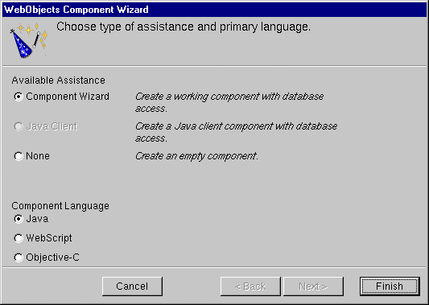
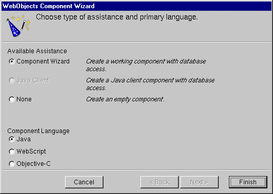

The WebObjects Component Wizard appears.

 Table of Contents
Table of Contents  Previous Section
Previous Section
Every application starts with a component called Main, which is shown in the Web Components suitcase in the second column of the browser as Main.wo. All components have the .wo extension.
If you double-click a component, WebObjects Builder opens the component for editing. "Editing With WebObjects Builder" shows how to edit your component using WebObjects Builder.
The WebObjects Component Wizard appears.

Table of Contents  Next Section
Next Section